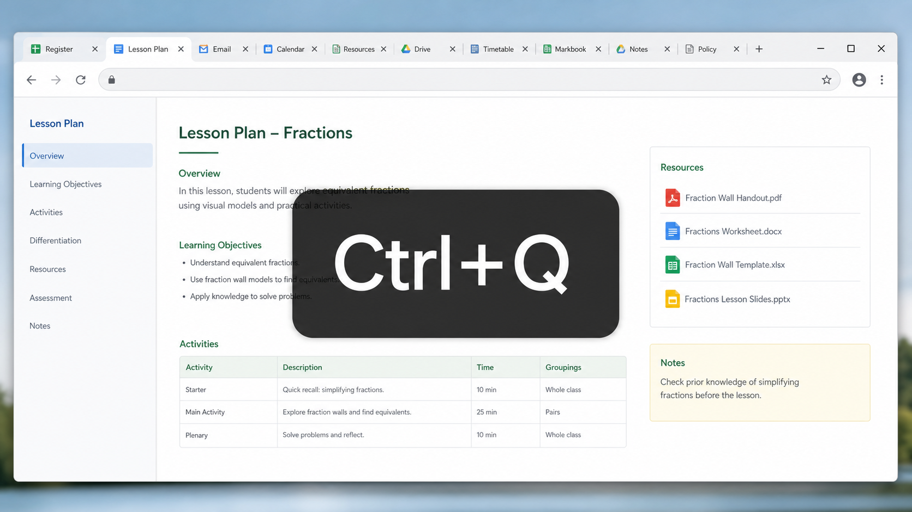

If you often move between several Chrome tabs while planning, teaching or checking school systems, the Previous Tab extension can make it much quicker to get back to the tab you were just using.
Chrome already has useful keyboard shortcuts for moving between tabs, but these move by tab position. Previous Tab adds a shortcut for going back to the previously used tab instead.
Install Previous Tab
You can install it from the Chrome Web Store here: Previous Tab Chrome extension.
How to use it
- Install the extension in Chrome.
- Press and hold Ctrl.
- Tap Q.
Chrome will switch back to the tab you were using immediately before the current one. For example, if you were working on tab 3 and then moved to tab 9, pressing Ctrl+Q takes you straight back to tab 3.
Useful built-in Chrome tab shortcuts
- Ctrl+Tab moves to the next open tab.
- Ctrl+Shift+Tab moves to the previous open tab.
- Ctrl+1 to Ctrl+8 moves to a specific tab position.
- Ctrl+9 moves to the rightmost tab.
Those shortcuts are still useful, but they do not jump to the tab you last used. That is the gap Previous Tab fills.
A quick note on lots of tabs
It is still worth closing tabs you no longer need, especially if Chrome starts to feel slow. In practice, lesson planning often means having registers, resources, email, calendars and documents open at the same time, so this shortcut can be a helpful way to stay oriented.